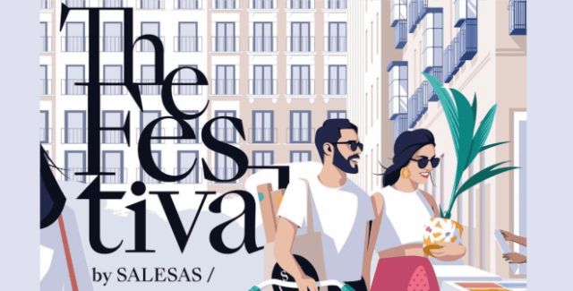
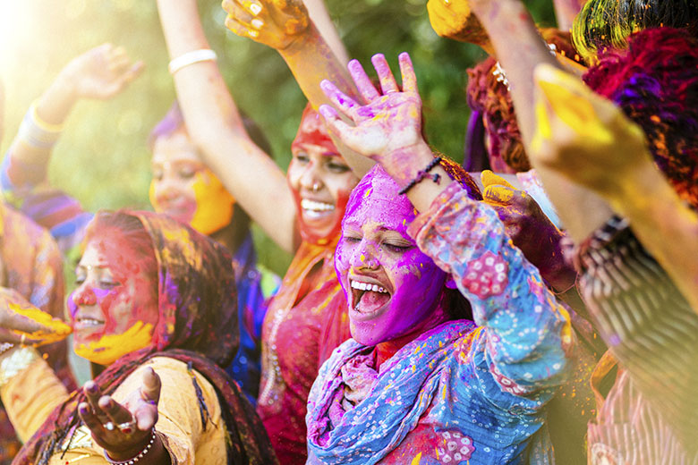

El pasado sábado, el Parque Central se llenó de color y alegría con la celebración del primer Festival Cultural de la Comunidad, un evento diseñado para destacar la riqueza cultural de nuestra región. Más de 15,000 personas asistieron a este festival, que incluyó música en vivo, danza, comida típica y actividades para todas las edades. Los organizadores, junto con artistas locales, trabajaron arduamente para crear un ambiente festivo y acogedor.
Puntos clave del Festival:| Actividad | Horario | |
|---|---|---|
| Inicio | Fin | |
| Concierto de Música Folklórica | 10:00 AM | 12:00 PM |
| Exposición de Artesanías Locales | 10:00 AM | 5:00 PM |
| Clase de Baile Tradicional | 1:00 PM | 3:00 PM |
| Concurso de Cocina | 3:30 PM | 5:00 PM |
| Desfile Cultural | 5:30 PM | |
"¡Fue un día inolvidable! La música y la comida fueron espectaculares. Espero que se repita el próximo año." - María López2024 Periódico Local. Para más información, contacta a info@periodicolocal.com.
"Me encantó la variedad de actividades. Mis hijos disfrutaron mucho en los talleres." - Juan Pérez